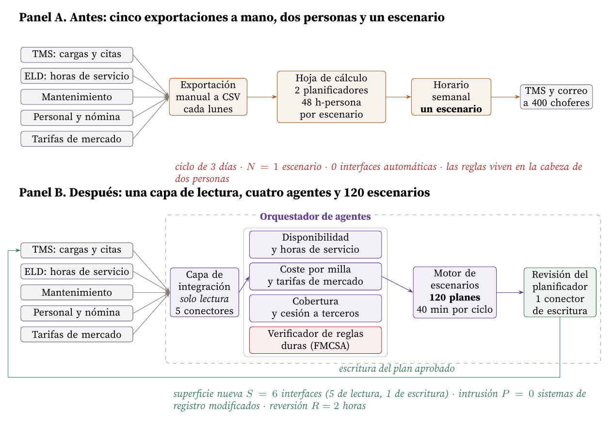
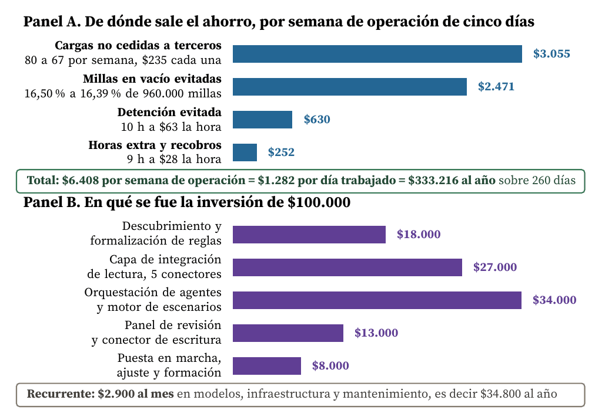
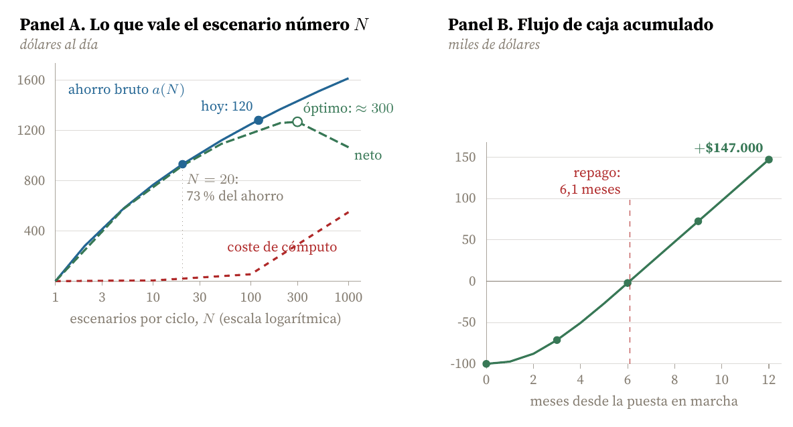
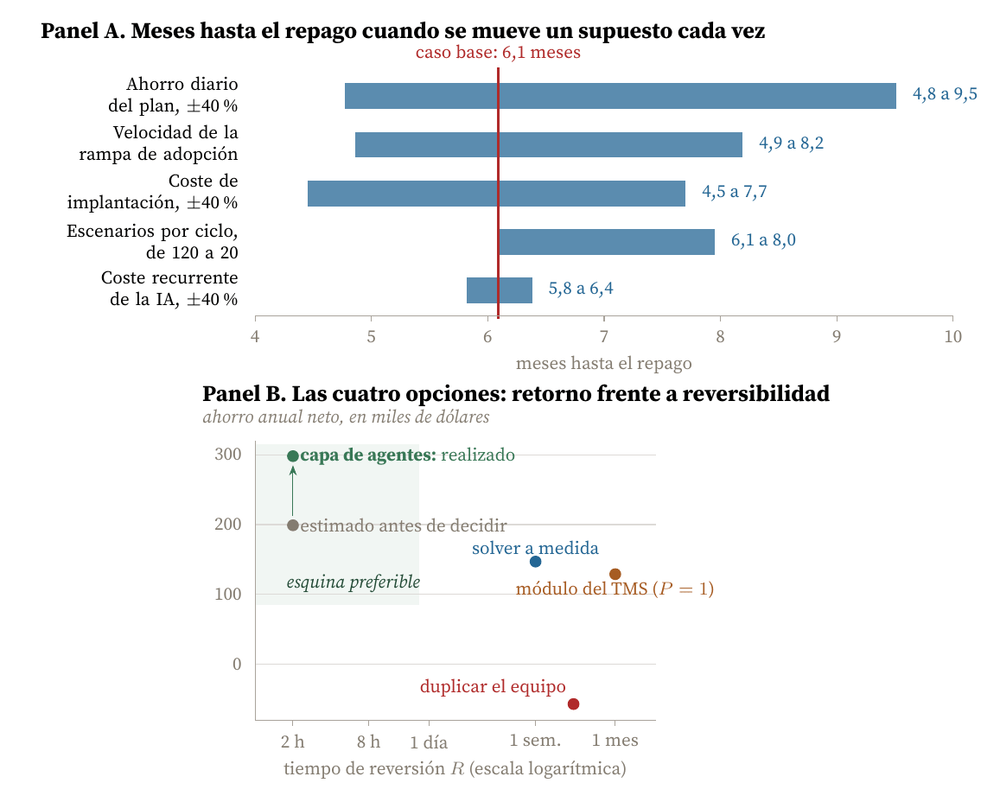

Marco cuantitativo para evaluar el impacto de adoptar una capa de agentes de inteligencia artificial sobre la arquitectura de un sistema de planificación logística
Carlos Luis Rojas Aragonés
La tecnología que analizo es una capa de agentes de inteligencia artificial integrada en el proceso de planificación semanal de una empresa de transporte de carga por carretera que opera en todo Estados Unidos con unos 400 choferes y sus equipos. El Cuadro 1 responde, en corto, a las preguntas del planteamiento; el resto del documento construye el marco que permite responderlas con números en lugar de con impresiones.
| Pregunta | Respuesta |
|---|---|
| ¿Qué tecnología nueva se integró? | Una capa de agentes de inteligencia artificial que compone y evalúa escenarios completos de horario semanal (apartado 5) |
| ¿En qué sistema se integró? | En el proceso de planificación de una empresa de transporte de carga a todo Estados Unidos, unos 400 choferes con equipo, que necesitaba datos de cinco sistemas distintos para producir un solo horario |
| ¿Cómo funcionaba la tecnología anterior? | Exportación manual de los cinco sistemas a una hoja de cálculo maestra y aplicación de reglas por parte de dos planificadores a tiempo completo: 48 horas de persona por escenario, un escenario por semana |
| ¿Aportó valor añadido? ¿Por qué? | Sí, y el mecanismo es preciso: no calculó mejor, calculó más veces. Pasar de 1 a 120 escenarios por ciclo convierte un proceso de satisfacción en uno de optimización muestreada (apartado 4) |
| ¿Cuál fue el coste de la adopción? | Unos $100.000 de implantación y $2.900 al mes de operación (apartado 6) |
| ¿Cómo afectó al coste del producto final? | El precio al cliente no bajó. El coste por milla cargada cayó alrededor de un 0,26 por ciento, que sobre el margen operativo típico del sector supone del orden del 5 por ciento (apartado 6) |
La tecnología no compró velocidad de cálculo: compró número de escenarios. El proceso anterior producía uno solo por ciclo porque un escenario costaba 48 horas de persona; la capa de agentes produce 120 en 40 minutos. Calibrando un modelo de estadísticos de orden sobre el ahorro observado, el escenario número veinte ya recoge el 73 por ciento del ahorro y el número ciento veinte aporta 1,56 dólares al día. Y el impacto sobre la arquitectura fue deliberadamente nulo: seis interfaces nuevas, ningún sistema de registro modificado y dos horas para volver atrás. Esa reversibilidad, y no la calidad del modelo, es lo que hizo defendible una inversión de 100.000 dólares.
Distingo dos clases de número, porque mezclarlas es la forma más rápida de que un análisis de adopción parezca más sólido de lo que es. Anclas (experiencia directa en el proyecto): unos 400 choferes con equipo; dos planificadores a tiempo completo; ciclo de planificación semanal; 260 días de operación al año, es decir cinco días por semana; ahorro reportado de al menos $1.000 por día trabajado; implantación en torno a $100.000; repago antes del primer año; recurso habitual a terceros para cubrir cargas.
Parámetros modelados (elaboración propia, declarados donde se usan): millas por chofer y semana, porcentaje de millas en vacío, cargas por semana, sobrecoste de ceder una carga, reparto del ahorro entre partidas, rampa de adopción, número de escenarios por ciclo y la dispersión σ del coste de los planes. Los costes unitarios del sector vienen de fuentes públicas citadas.
El planteamiento pide un marco y un método para evaluar cuantitativamente el impacto de la adopción sobre la arquitectura, actual o futura, del producto. Esa precisión importa: la mayoría de las evaluaciones de adopción miden solo el retorno económico y tratan la arquitectura como un detalle de implantación. El informe de Challapally et al. (2025) sobre 300 iniciativas empresariales encuentra que el 95 por ciento de los pilotos de inteligencia artificial generativa no produce retorno medible, y atribuye el fallo no a la calidad de los modelos sino a la integración y al encaje en el flujo de trabajo. Es decir, al impacto arquitectónico.
Por eso el método que propongo mide tres cosas y no una: la figura de mérito del proceso, la huella sobre la arquitectura y la sensibilidad de ambas a los supuestos. El Cuadro 2 lo resume en cinco pasos.
| Paso | Qué produce | Resultado en este caso | |
|---|---|---|---|
| 1 | Declarar la función y la figura de mérito del proceso, no de la tecnología | Una ecuación de coste con unidades | Coste total del plan semanal, ecuación (1) |
| 2 | Medir la línea base con el sistema actual | Un número y su descomposición | $2,80 por milla cargada, un escenario por ciclo |
| 3 | Localizar la restricción activa | La variable cuya relajación mueve la figura de mérito | No era el cálculo ni los datos: era el número de escenarios que cabía en el ciclo |
| 4 | Situar la tecnología en la arquitectura y medir su huella | Superficie S, intrusión P y reversión R | S = 6 interfaces, P = 0 sistemas de registro, R = 2 horas |
| 5 | Calcular el impacto y su sensibilidad | Δ, repago y el diagrama de tornado | $1.282 por día trabajado, repago en 6,1 meses, y el supuesto que decide es la rampa de adopción |
Figura de mérito del proceso. Siguiendo la disciplina de de Weck (2022), la declaro sobre la función prestada y no sobre la implementación. La función es convertir la demanda semanal de cargas en una asignación factible de choferes, equipos y citas que cumpla las reglas de horas de servicio y los compromisos con el cliente. El coste de un plan P es
C(P) = cm M(P) + T(P) + D(P) + L (1)
donde M(P) son las millas totales del plan (cargadas más vacías), cm el coste marginal por milla, T(P) el sobrecoste de las cargas que hay que ceder a terceros, D(P) el coste de detención y tiempo muerto y L el coste de planificar. El impacto de la adopción es Δ = C(Pbase) − C(Pagentes).
Impacto arquitectónico. Deliberadamente no lo colapso en un único índice, porque las tres dimensiones que importan no son conmensurables:
R es la métrica que casi nunca se escribe y la que más decide, porque fija cuánto riesgo se puede asumir y, por tanto, cuánto se puede invertir.
La empresa mueve del orden de 960.000 millas por semana (400 choferes a unas 2.400 millas cada uno). Tomo cm = $2,34 por milla, que es el coste marginal medio del sector en 2025 según el American Transportation Research Institute (2026), y un 16,5 por ciento de millas en vacío, que es la referencia de las flotas de alquiler público para ese mismo año (FreightWaves, 2025). Con un recorrido cargado medio de 600 millas salen unas 1.340 cargas por semana, de las cuales unas 80 se cedían a terceros; el sobrecoste de cederlas es el margen bruto del corretaje, entre el 12 y el 20 por ciento del flete (Anderson Trucking Service, 2026), que sobre una carga típica deja unos $235.
El coste de detención que uso, $63 por hora, está dentro del rango habitual del sector, cuya magnitud agregada documenta el American Transportation Research Institute (2024): 3.600 millones de dólares en gasto directo y 11.500 millones en productividad perdida solo en 2023.
Las reglas que el plan no puede violar son las horas de servicio de la Federal Motor Carrier Safety Administration (2026): 11 horas de conducción tras 10 de descanso, dentro de una ventana de 14 horas, con un límite de 70 horas en 8 días. Son restricciones duras: ningún escenario que las incumpla es un escenario.
Con esos parámetros, la línea base es un coste de millas de unos 117 millones de dólares al año y $2,80 por milla cargada. Y, sobre todo, un escenario por ciclo.
Un apunte que decide el resto de la aritmética: la empresa opera 260 días al año, cinco por semana, de modo que ese es el denominador de toda anualización que sigue. Un ahorro diario se multiplica por 260 y no por 365, lo que recorta casi un 30 por ciento cualquier cifra anual frente a la tentación de anualizar sobre el calendario.
Este es el paso que cambia el análisis, y es donde el marco gana su sueldo.
La lectura intuitiva de la adopción es que los agentes «calculan mejor». No es eso. Los dos planificadores aplicaban reglas correctas y conocían la operación mejor que cualquier modelo. Lo que no podían hacer era repetir: construir un escenario completo de 1.340 cargas les costaba unas 48 horas de persona, y la ventana entre que se cierra la demanda y hay que publicar el horario daba para uno. Cuando uno funcionaba, se quedaban con él. Eso es exactamente el comportamiento de satisfacción que describe Simon (1956): ante un entorno demasiado grande para explorarlo, el decisor no busca el óptimo, busca el primer resultado que supere el umbral de aceptabilidad.
La restricción activa, por tanto, era el coste humano por escenario. Y eso admite un modelo. Si el coste de un plan factible se distribuye alrededor de una media μ con dispersión σ, y el sistema genera N planes y se queda con el mejor, el coste esperado del elegido es el mínimo de N extracciones. Por la teoría de estadísticos de orden (David y Nagaraja, 2003), el ahorro esperado frente a quedarse con una sola extracción es
a(N) = σ · E[ max{Z1, …, ZN} ], Zi ~ N(0, 1) (2)
Calibro σ con el único dato que tengo del sistema real: a N = 120 el ahorro observado es de $1.282 por día trabajado, y E[max] para N = 120 vale 2,57, de modo que σ = $499 al día. El Panel A de la Figura 3 dibuja la curva resultante, y su forma es la conclusión más útil de todo el trabajo:
Esto reordena la pregunta de la adopción. La tecnología relevante no era «inteligencia artificial» como categoría: era cualquier cosa que abaratase el escenario en tres órdenes de magnitud. Los agentes lo consiguieron porque las reglas de la operación eran en buena parte tácitas y cambiantes, y expresarlas en lenguaje natural sobre datos ya existentes resultó más barato que formalizarlas en un modelo matemático, que es la alternativa que examino en el apartado siguiente.
La Figura 1 pone el antes y el después uno encima del otro. Lo importante no es lo que aparece en el Panel B, sino lo que no aparece: ninguna caja del Panel A cambia de forma.

Figura 1. La adopción no tocó ningún sistema de registro. Los cinco orígenes de datos del Panel A son exactamente los mismos del Panel B y ninguno cambió de esquema: lo que se añadió fue una capa de lectura por delante y un único conector de escritura por detrás, después de que una persona apruebe el plan. Esa decisión de inserción es la que fija las tres métricas arquitectónicas del apartado 2, y es también la que explica por qué la reversión cuesta dos horas: apagar la capa devuelve el proceso a la hoja de cálculo sin migrar nada. Elaboración propia.
Antes de construir nada se compararon cuatro maneras de relajar la restricción activa. El Cuadro 3 las pone con sus tres métricas arquitectónicas al lado del retorno, que es la comparación que el marco exige hacer y que casi nunca se hace.
| Opción | S | P | Por qué se descartó o se eligió | Neto anual |
|---|---|---|---|---|
| Duplicar el equipo de planificación | 0 | 0 | Solo lleva N de 1 a 2 (dos personas más), y la ecuación (2) dice que el segundo escenario vale $282 al día, $73.000 al año, frente a $130.000 de coste | −$57.000 |
| Módulo del proveedor del TMS | interno | 1 | Modifica un sistema de registro y solo ve los datos del propio TMS: ni horas de servicio ni mantenimiento. Reversión en semanas | +$129.000 |
| Solver matemático a medida | 6 | 0 | Exige formalizar todas las reglas, y buena parte son tácitas y cambian cada temporada. El coste no está en el solver sino en mantener el modelo | +$147.000 |
| Capa de agentes (elegida) | 6 | 0 | Única opción que deja los cinco sistemas de registro intactos y se apaga en dos horas. Acepta reglas en lenguaje natural, que es la forma en que la operación las tiene escritas. Se estimó en $199.000 (a $900 diarios) y rindió $298.000 | +$298.000 |
La comparación entre la tercera y la cuarta fila es la más instructiva. Sobre el papel, un modelo de optimización matemática domina a una capa de agentes: encuentra el óptimo, no una muestra. Pero la figura de mérito relevante no es la calidad del óptimo sobre las reglas formalizadas, sino sobre las reglas reales, y en esta operación una fracción grande de las reglas es tácita («a este cliente no se le manda un conductor nuevo») y cambia con la temporada. El solver optimiza mejor un problema que no es el problema. Esa es la razón técnica por la que ganó la capa de agentes, y no la novedad de la tecnología.
La Figura 2 descompone de dónde sale el ahorro y en qué se fue la inversión, y el Panel B de la Figura 3 dibuja el flujo de caja acumulado.

Figura 2. Panel A: las cuatro partidas del ahorro, por semana de operación de cinco días. El 86 por ciento del total está en decisiones de asignación (no ceder una carga, no rodar en vacío), que es precisamente lo que mejora al comparar más escenarios. Panel B: el reparto de los $100.000 de implantación. Menos de la mitad del dinero se fue en la parte propiamente de inteligencia artificial; el resto fue integración, interfaz y puesta en marcha, que es el reparto que Challapally et al. (2025) señala como el que separa los pilotos que rinden de los que no. Elaboración propia sobre los parámetros del apartado 3.

Figura 3. Panel A: la ecuación (2) calibrada con σ = $499 por día trabajado sobre el único punto observado, N = 120. La curva de coste supone $0,55 por escenario evaluado. El cruce de las pendientes sitúa el óptimo económico alrededor de 300 escenarios, y el máximo es plano entre 200 y 400, de modo que la recomendación es robusta aunque el valor exacto no lo sea. Panel B: flujo de caja acumulado, con el ahorro anualizado sobre 260 días de operación y una rampa de adopción del 20, 45, 70, 85 y 95 por ciento en los cinco primeros meses. Elaboración propia.
El resultado: $6.408 de ahorro por semana de operación, es decir $1.282 por día trabajado y $333.216 al año sobre los 260 días que la empresa opera, contra $34.800 anuales de coste recurrente. El neto es de $298.416 al año sobre una inversión de $100.000, con repago en 6,1 meses y un saldo acumulado de $147.000 al cierre del primer año.
Ese repago coincide con lo que recuerdo haber reportado en su momento, «antes del primer año», pero el margen es menos cómodo de lo que parece. El apartado siguiente lo cuantifica: con una rampa de adopción lenta el repago se va a 8,2 meses, y con un ahorro un 40 por ciento inferior al modelado, a 9,5. El calendario de un año deja de ser holgura y pasa a ser límite.
Aquí la respuesta honesta es menos espectacular que la cifra de ahorro. El precio al cliente no bajó. Lo que ocurrió fue que se dejó de pagar el margen del intermediario en casi una cuarta parte de las cargas que antes se cedían, y ese dinero se quedó dentro. Sobre un coste operativo del orden de 117 millones de dólares al año, $298.000 son un 0,26 por ciento del coste unitario: el coste por milla cargada pasa de unos $2,802 a unos $2,795. Parece poco, y como reducción de coste lo es. Pero el margen operativo de un transportista de carga completa está en el entorno del 4 al 5 por ciento y sigue comprimido (American Transportation Research Institute, 2026), de modo que esos 0,26 puntos de coste equivalen a algo del orden del 5 por ciento del beneficio operativo. Esa es la magnitud correcta con la que presentar la adopción, y no el porcentaje sobre el coste.
Un marco que da un número sin decir de qué depende no sirve para decidir. El Panel A de la Figura 4 repite el cálculo del repago moviendo cada supuesto por separado.

Figura 4. Panel A: diagrama de tornado del repago. La barra más corta es la que casi todo el mundo discute primero, el coste recurrente de los modelos, y la segunda más larga es la que casi nadie presupuesta, la velocidad con que la organización adopta la herramienta. Panel B: las cuatro opciones del Cuadro 3 situadas frente a las dos dimensiones que deciden. El eje horizontal es el tiempo de reversión, y en él contratar personas resulta menos reversible que encender un servicio. La flecha une la estimación previa con el resultado realizado. Elaboración propia.
Tres lecturas, por orden de utilidad:
Como en cualquier sistema, relajar la restricción dominante no elimina el problema: lo traslada. El Cuadro 4 recoge dónde está ahora el límite, ordenado por cuánto pesa hoy.
| Restricción activa | Qué límite impone | Mitigación y su coste |
|---|---|---|
| 1. Tasa de aceptación del planificador | El sistema propone y una persona aprueba, de modo que el ahorro real es el ahorro teórico multiplicado por la fracción de planes aceptados. Es el techo efectivo de toda la adopción | Explicar cada decisión y dejar editar el plan. Coste: parte del ahorro se pierde en cada edición manual |
| 2. Calidad y latencia de los datos de origen | Un escenario no puede ser mejor que los datos que lo alimentan, y el ELD y el TMS no siempre coinciden en dónde está un equipo | Reconciliación y reglas de precedencia entre fuentes. Coste: trabajo continuo, no un proyecto |
| 3. Reglas tácitas no capturadas | Lo que nadie escribió nunca no entra en la función objetivo, y reaparece como una edición manual del plan | Realimentar las ediciones al sistema. Coste: exige registrar el porqué de cada edición, que es disciplina, no tecnología |
| 4. Escenarios por ciclo | Hoy limita poco: pasar de 120 a 300 valdría unos $13.800 al año, un 5 por ciento del neto | Más cómputo. Coste: lineal en el número de escenarios y, por tanto, fácilmente ajustable |
| 5. Dependencia del proveedor | Riesgo de precio y de continuidad sobre una pieza que no se controla | Las tres métricas del apartado 2: con P = 0 y R = 2 horas, el riesgo está acotado por construcción |
Merece la pena subrayar la primera, porque es la que más se parece a lo que Challapally et al. (2025) describe. El límite del sistema no lo pone el modelo: lo pone cuánto se fía de él la persona que firma el horario. Y la única palanca sobre esa variable es la que aparece en el Panel A de la Figura 4 como «rampa de adopción».
American Transportation Research Institute. (2024, septiembre). Costs and consequences of truck driver detention. https://truckingresearch.org/2024/09/new-research-documents-substantial-financial-and-safety-impacts-from-truck-driver-detention/
American Transportation Research Institute. (2026, julio). An analysis of the operational costs of trucking: 2026 update. https://truckingresearch.org/2026/07/new-atri-report-details-accelerating-costs-and-low-profitability-despite-cuts/
Anderson Trucking Service. (2026). How freight brokerages make money, explained. https://www.atsinc.com/blog/how-freight-brokerages-make-money-explained
Challapally, A., Pease, C., Raskar, R., & Chari, P. (2025, julio). The GenAI divide: State of AI in business 2025. MIT Project NANDA. https://mlq.ai/media/quarterly_decks/v0.1_State_of_AI_in_Business_2025_Report.pdf
David, H. A., & Nagaraja, H. N. (2003). Order statistics (3.ª ed.). Wiley. https://doi.org/10.1002/0471722162
de Weck, O. L. (2022). Technology roadmapping and development: A quantitative approach to the management of technology. Springer. https://doi.org/10.1007/978-3-030-88346-1
Federal Motor Carrier Safety Administration. (2026). Hours of service of drivers. U.S. Department of Transportation. https://www.fmcsa.dot.gov/regulations/hours-of-service
FreightWaves. (2025). What you need to know about empty miles in trucking. https://www.freightwaves.com/news/what-you-need-to-know-about-empty-miles-in-trucking
Simon, H. A. (1956). Rational choice and the structure of the environment. Psychological Review, 63(2), 129–138. https://doi.org/10.1037/h0042769